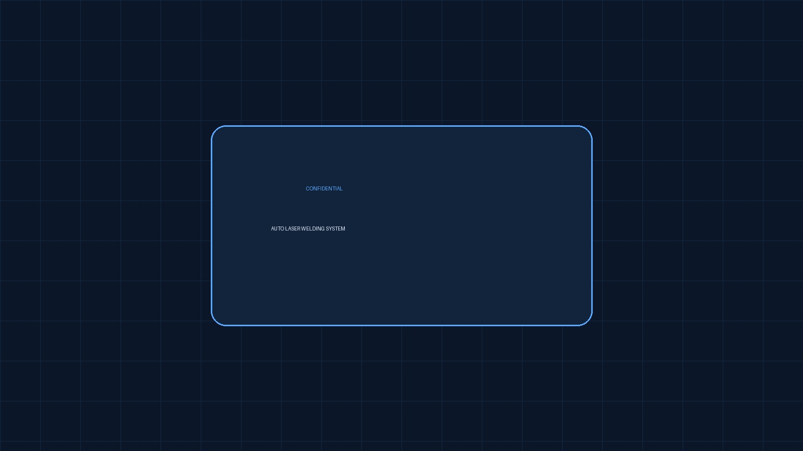

← Back to projects
Precision Automation • Philippines • 2015
Auto Laser Welding System
High-volume automated laser welding platform developed for repeatable positioning, stable cycle time and consistent production quality.
Mitsubishi PLCIAI 3-Axis RobotYAG LaserSolidWorksSMC Pneumatics

Responsibilities
Machine concept, mechanical design, PLC programming, servo integration, pneumatic design, assembly and production support.
What needed to be solved
Maintain repeatable welding accuracy and stable throughput during continuous production.
Engineering approach
Synchronized servo positioning, laser activation, safety interlocks and diagnostics, followed by structured validation and process optimization.
Key outcomes
- Approx. 50,000 units per line/month
- Improved weld consistency
- Reduced manual handling
- Stable high-volume production